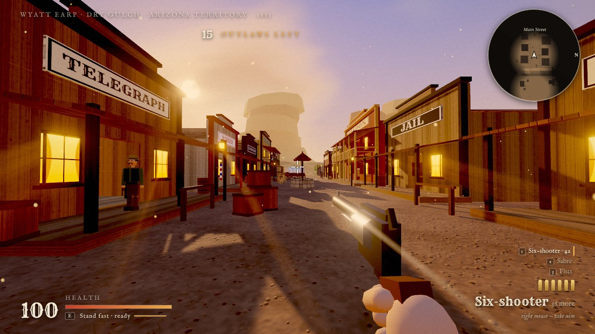
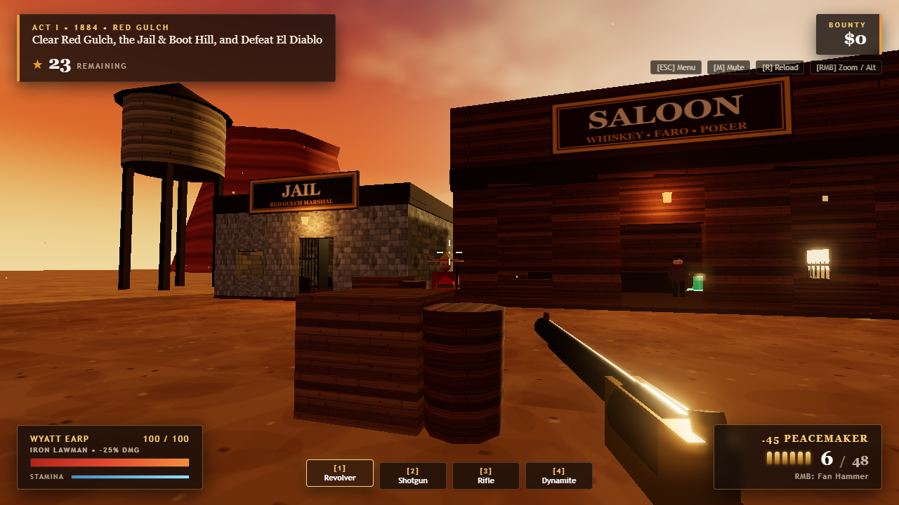

Outlaws
Two first-person shooters inspired by the 1997 Western Outlaws. Six frontiers to cross, alone against many: the Old West, feudal Japan, medieval Switzerland, ancient Greece, Viking Scandinavia and Normandy in 1944. Each version below was built by a different AI assistant from the same brief.

Lone Hand
Built with Claude. Six chapters from Dry Gulch to Normandy, with eighteen heroes of history and legend, all generated by code.
Play Lone Hand
Six Horizons
Built with Gemini. WebGL2 and Three.js across six eras from Red Gulch to Normandy, with eighteen selectable heroes, GLSL skies, northern lights, sniper optics and twenty era weapons.
Play Six Horizons